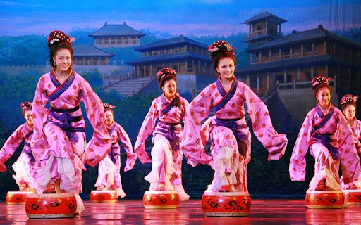

相和，汉旧歌也。丝竹更相和，执节者歌。
The name of Xianghe song first appeared in the Han Dynasty. It is a Han music form formed on the basis of the folk songs sung in the street. It inherits the traditions of Qin sound, Zhao sound, Qi sound, Zheng sound, Chu sound and so on in the pre-Qin period. Its characteristics are that the silk and bamboo are more harmonious, and the festival performer's song, that is, the singer's self beating drum is corresponding to the accompaniment of the orchestral instrument, so it is named. It is mainly played in banquets, entertainment and other occasions of officials and tycoons. It is also used in court meetings, worship of gods and even Han folk activities.
